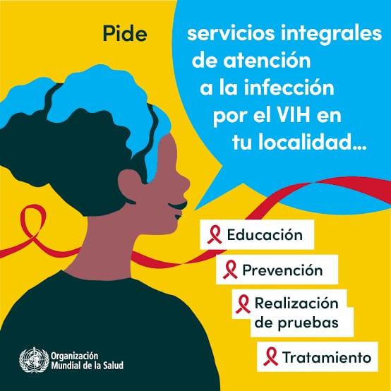

El Tratamiento TARGA
Tratamiento Antirretroviral de Gran Actividad, gratuito en los establecimientos del MINSA.
¿Cómo actúa el tratamiento en tu cuerpo?
El TARGA combina distintos medicamentos que bloquean la multiplicación del virus. Al no poder reproducirse, el virus disminuye en la sangre y tus defensas se fortalecen y recuperan.
La importancia de la adherencia: el tratamiento no elimina el virus del cuerpo, pero lo mantiene bajo control. Por eso es vital tomar la dosis todos los días, a la misma hora, tal como indique tu médico, para evitar que el virus se vuelva resistente.
Concepto clave: Indetectable = Intransmisible (I=I)
Tras un tiempo de tratamiento constante, la cantidad de virus en la sangre puede ser tan baja que los exámenes no la detectan (carga viral indetectable). Una persona con carga viral indetectable sostenida no transmite el VIH por vía sexual. Esto requiere mantener el tratamiento y los controles médicos.
Protección materno-infantil y tuberculosis
Si una gestante sigue el TARGA con supervisión médica, el riesgo de transmitir el VIH a su bebé se reduce a menos del 1%. Además, la atención integral permite prevenir y tratar la tuberculosis (TB), una coinfección frecuente en el Perú.
Atención Médica Integral
La Organización Mundial de la Salud (OMS) promueve el acceso universal a la salud con dignidad y respeto.

¿Dónde pedir ayuda o hacerte la prueba?
- Infosalud (MINSA): llama al 113, gratuito, para orientación y ubicar tu establecimiento de salud más cercano.
- En Cusco: acude a tu centro de salud o a hospitales como el Hospital Regional del Cusco o el Hospital Antonio Lorena, y pregunta por el servicio de ITS/VIH (consejería y prueba).
- DIRESA Cusco: puede indicarte el establecimiento con atención de VIH más cercano a tu distrito.
Confirma horarios y servicios disponibles antes de ir.